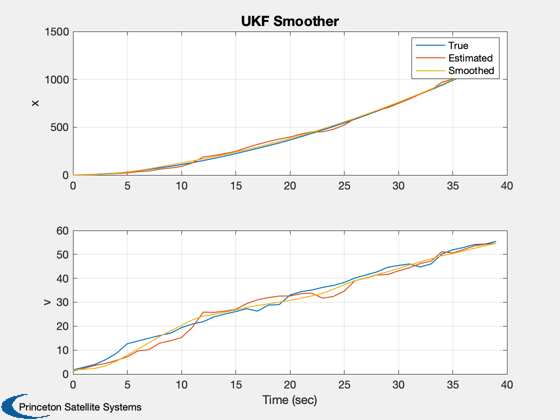

Demo of Rauch-Tung-Striebel smoothing for an Unscented Kalman Filter.
This is for a non-augmented, i.e. additive Gaussian noise form. First we run the simulation and UKF for some time, gathering measurements and estimates, then we call the smoother.
Contents
Simulation parameters
n = 40;
dT = 1;
sigmaT = 2;
sigmaTheta = 0.1;
% Data for RHSX
d = struct;
d.m = 1;
d.t0 = 11;
d.g = 9.806;
d.b = 1000;
Estimation parameters
dRHS = d; dRHS.tNoise = 0; dRHS.noise = 0; u = KFInitialize( 'ukf' ); u.f = @RHSX; u.alpha = 1; u.kappa = 0; % Should be number of states - 2 u.beta = 2; u.dT = dT; u.fData = dRHS; u.q = diag([0 sigmaT^2]); % Plant noise covariance u.p = diag([0.1 0.01]); x = [0;0]; u.m = x; m = zeros(2,n); p = zeros(2,2,n); % Get the UKF weights %-------------------- u = UKFWeight( u );
UKF
t = 0; u.p = diag([0.1 0.01]); xP = zeros(2,n); for k = 1:n % Measurement %------------ d.noise = sigmaTheta*randn; d.tNoise = sigmaT*randn; x = RK4( 'RHSX', x, dT, 0, d ); xP(:,k) = x; % UKF %---- u.t = t; u.y.data = AngleSensor(x,d); u.y.param.hFun = @AngleSensor; u.y.param.hData = dRHS; u.y.param.r = sigmaTheta^2; % Measurement noise covariance u = UKFPredict( u ); u = UKFUpdate( u ); m(:,k) = u.m; p(:,:,k) = u.p; t = t + dT; end % Smooth the data %---------------- u = UKFRTSS( m, p, u ); [t, tL] = TimeLabl((0:n-1)*dT); Plot2D(t,[xP;m;u.mS],tL,{'x' 'v'},'UKF Smoother','lin',{'[1 3 5]' '[2 4 6]'}); legend('True', 'Estimated', 'Smoothed') %-------------------------------------- % $Date$ % $Id: a1998a95efb0c22a0957404c4e4617c63e1d6379 $